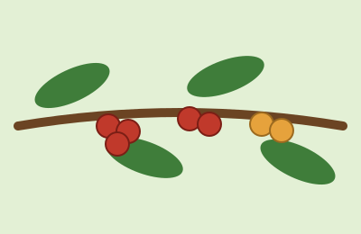
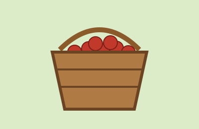
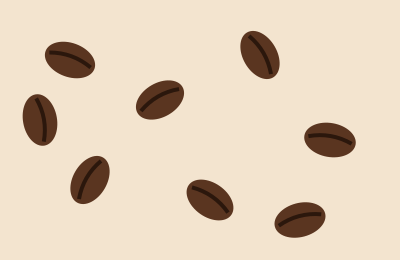
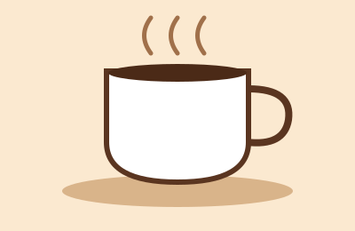

La planta
El cafeto crece mejor entre 1.200 y 2.000 metros de altura. Sus frutos, llamados cerezas, se vuelven rojos cuando están listos.
Del cultivo colombiano a tu taza
Colombia es famosa por su café suave y aromático. Su clima, la altura de sus montañas y el trabajo de miles de familias campesinas hacen posible cada taza. En este sitio recorremos el camino del grano, desde la planta hasta tu desayuno.

El cafeto crece mejor entre 1.200 y 2.000 metros de altura. Sus frutos, llamados cerezas, se vuelven rojos cuando están listos.

En Colombia la recolección se hace a mano, escogiendo solo las cerezas maduras. Por eso el grano es de tan buena calidad.

Dentro de cada cereza hay dos semillas. Después de secarlas y tostarlas se convierten en los granos que conocemos.

Un buen café colombiano tiene acidez brillante, cuerpo medio y notas a panela, frutas y chocolate.